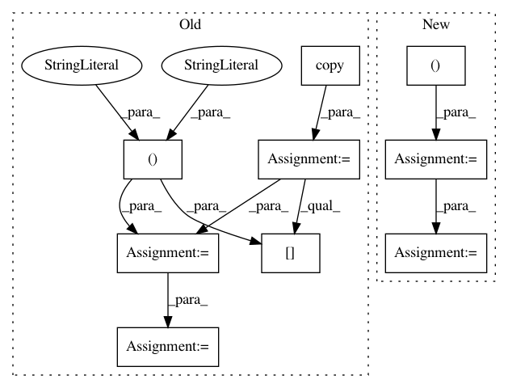

3df2eaf74d8f2299ca05e3e98cab5bf89dafc249,cnn_visualisation.py,,preprocess_image,#Any#,91
Before Change
means = [0.485, 0.456, 0.406]
stds = [0.229, 0.224, 0.225]
preprocessed_img = img.copy()[:, :, ::-1]
for i in range(3):
preprocessed_img[:, :, i] = preprocessed_img[:, :, i] - means[i]
preprocessed_img[:, :, i] = preprocessed_img[:, :, i] / stds[i]
preprocessed_img = \
np.ascontiguousarray(np.transpose(preprocessed_img, (2, 0, 1)))
preprocessed_img = torch.from_numpy(preprocessed_img)
preprocessed_img.unsqueeze_(0)
After Change
mean = [0.485, 0.456, 0.406]
std = [0.229, 0.224, 0.225]
// Resize image
PIL_img = PIL_img.resize((224, 224), Image.ANTIALIAS)
// Convert to np array
im_as_arr = np.array(PIL_img, dtype=np.float)
// Transpose to obtain D-W-H
im_as_arr = im_as_arr.transpose(2, 0, 1)
// Normalize the channels
for channel, _ in enumerate(im_as_arr):
im_as_arr[channel] /= 255
im_as_arr[channel] -= mean[channel]
In pattern: SUPERPATTERN
Frequency: 3
Non-data size: 9
Instances
Project Name: utkuozbulak/pytorch-cnn-visualizations
Commit Name: 3df2eaf74d8f2299ca05e3e98cab5bf89dafc249
Time: 2017-10-24
Author: utku.ozbulak@gmail.com
File Name: cnn_visualisation.py
Class Name:
Method Name: preprocess_image
Project Name: chainer/chainercv
Commit Name: 08aeb66bf5f5e91dff7f76768c70d591b17a4117
Time: 2017-05-28
Author: Hakuyume@users.noreply.github.com
File Name: chainercv/links/model/ssd/train_transformer.py
Class Name: TrainTransformer
Method Name: __call__
Project Name: modAL-python/modAL
Commit Name: f8df6021a1343d511d4c9b4c108ec5b683ce5487
Time: 2018-08-14
Author: dannyofig@gmail.com
File Name: modAL/batch.py
Class Name:
Method Name: ranked_batch